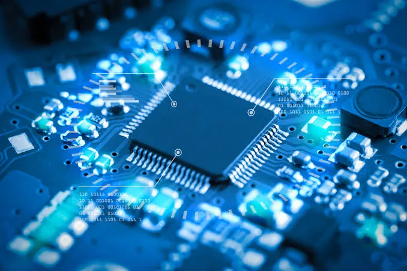
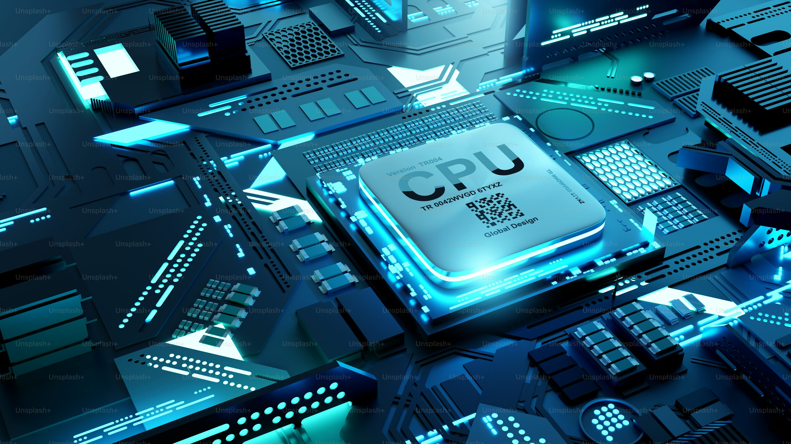
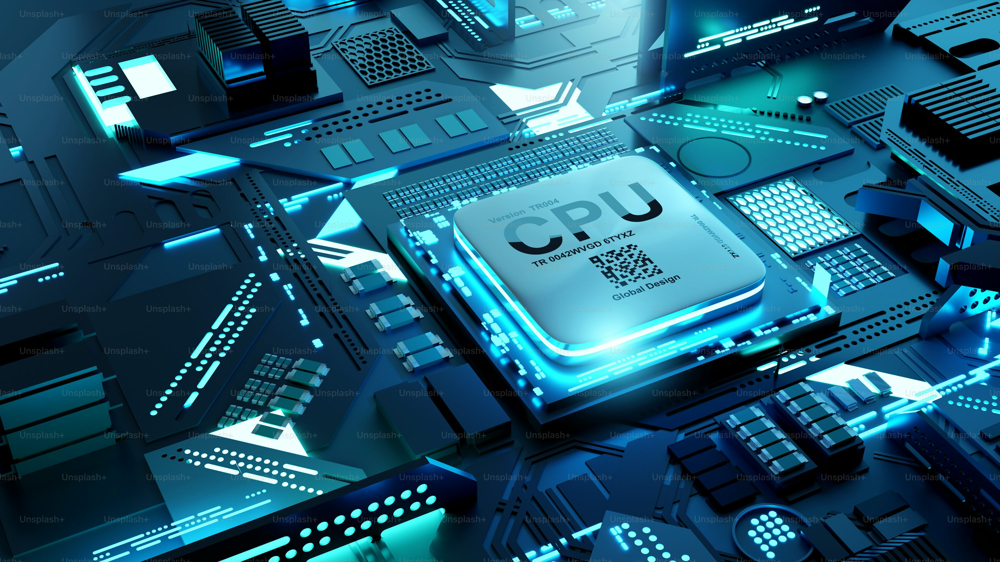
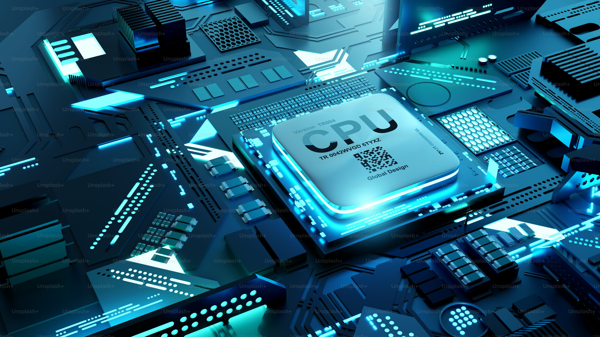

Beranda
Selamat datang di analisis CPU KLASIK DAN MODERN. Berikut koleksi gambar CPU

 


💻 Pengertian CPU
CPU (Central Processing Unit) merupakan “otak” komputer yang berperan penting dalam memproses seluruh instruksi dari perangkat lunak. CPU melakukan perhitungan, mengatur operasi sistem, serta mengendalikan aktivitas komponen komputer lainnya. Tugas utamanya adalah mengolah data menjadi informasi dan menjalankan perintah dengan mengeksekusi instruksi program secara cepat dan terkoordinasi.
🔍 Jenis CPU
Klik salah satu jenis CPU untuk melihat penjelasan.
🧩 Struktur CPU
⚙️ ALU
Operasi aritmatika & logika
Operasi aritmatika & logika
🧠 CU
Mengatur & mengendalikan instruksi
Mengatur & mengendalikan instruksi
🗂️ Register
Penyimpanan data sangat cepat
Penyimpanan data sangat cepat
⚡ Cache
Mempercepat akses data
Mempercepat akses data
🔗 Bus — Jalur penghubung data antar komponen CPU
🔄 Simulasi Proses Kerja CPU
1. Fetch
Mengambil instruksi dari memori utama
Mengambil instruksi dari memori utama
⬇️
2. Decode
Menerjemahkan instruksi agar dapat diproses
Menerjemahkan instruksi agar dapat diproses
⬇️
3. Execute
Menjalankan instruksi sesuai perintah
Menjalankan instruksi sesuai perintah